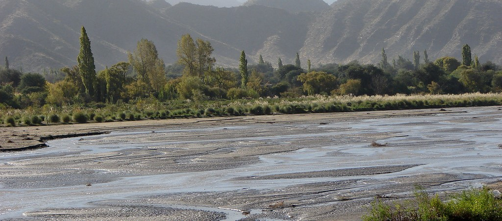
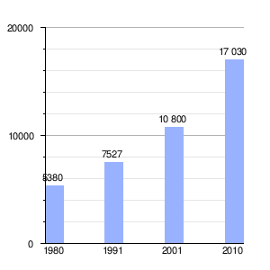

Santa María de Los Ángeles del Yokavil, comúnmente llamado Santa María, es la ciudad capital del departamento homónimo, en el centro este de la provincia argentina de Catamarca; sobre la margen derecha del río Santa María, a 332 km de la capital provincial San Fernando del Valle de Catamarca. También es considerada la capital de los Valles Calchaquíes.
Dependen del municipio las comunas de Chañar Punco y Loro Huasi, que tienen un delegado comunal electo a su frente.
El Valle de Santa María o de Yocavil fue asiento de milenarias culturas. Diversas parcialidades habitaron la región con la más alta densidad poblacional de su época.
Fue aquí donde se desarrolló la Cultura Santa María que influyó durante centurias vastos territorios de Catamarca, Salta y Tucumán. Este valle también fue ocupado por el Imperio Inca desde aproximadamente 1480 d. C. hasta la llegada de los españoles, probablemente en 1536 cuando Diego de Almagro atravesó el valle en su paso a Chile.
El Valle del Yokavil ofrece un panorama de paisajes sorprendentes, tonos ocres y colorados cerros, en donde los antepasados dejaron sus huellas plasmadas en monumentos y rocas.

Cuenta con 17.030 habitantes (Indec, 2010), lo que representa un incremento del 58% frente a los 10.800 habitantes (Indec, 2001) del censo anterior.
Gráfico de evolución demográfica de Santa María entre 1980 y 2010

El clima de Santa María es árido de sierras y bolsones. Los veranos son muy bóreas cálidos y con escasas precipitaciones (200 mm. anuales); los inviernos se presentan fríos y rigurosos con ocasionales nevadas. Las temperaturas mínimas absolutas pueden bajar hasta los -13 °C (Período 1904-1950), y hasta -16 °C bajo cero en inviernos muy fríos.
Parámetros climáticos promedio de Santa María, Catamarca (1904-1950, extremos 1951-1950 and 1976-1986)

Alumno: Castro Santiago